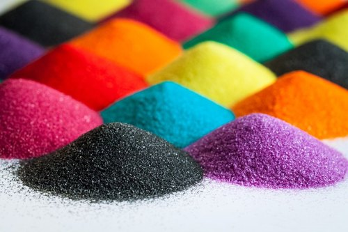
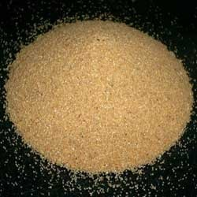
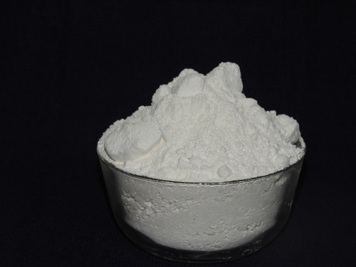
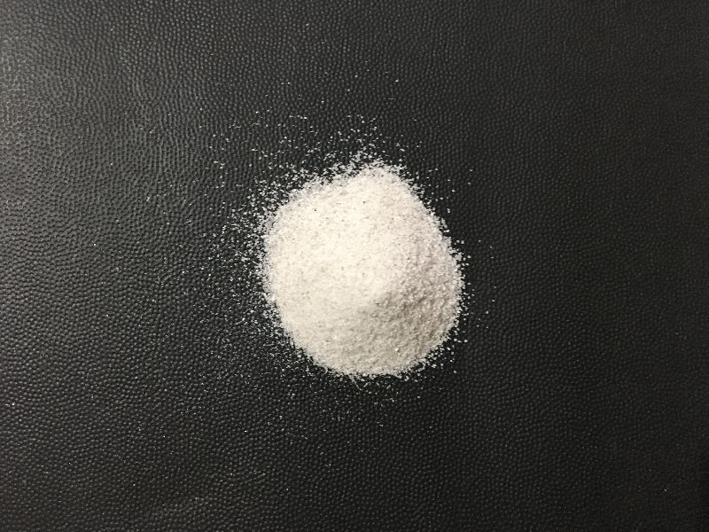

Consistent Quality
We align batch release to parameters you define—chemical purity, moisture, particle size—so your plant sees repeatability, not surprises.
Parag Suthar 9825313900
Balasinor, Gujarat · Industrial minerals
36+ Years of Industry Expertise — Delivering consistent quality silica for glass, ceramics, foundry & construction industries.
Get in TouchAbout us
Since 2000, Silica Flour has focused on dependable graded silica sand, silica flour, quartz powder, china clay and foundry-oriented blends—materials where chemistry, sizing and moisture either fit your line or they do not. Specifications evolve; our long tenure helps us translate them into workable release criteria, not generic brochures.
Our foundation is 36 years of hands-on experience in silica and industrial minerals: sourcing, washing, milling, classification and dispatch. That judgment informs how we set up runs, segregate grades and document lots for buyers who audit what they receive.
We supply buyers in glass, ceramics, foundry, construction chemicals, coatings and allied sectors who need repeatability—same sieve curve, same declared limits, shipment after shipment.
“Quality and consistency are not claims—they come from decades of experience.”
Decades of exposure to raw materials, processing limits and customer expectations—before Silica Flour formalized today’s manufacturing footprint.
Dedicated manufacturing and supply with emphasis on consistent grades, practical process control and documentation industrial buyers can file.
Partnering with plants that care about both chemistry and logistics—from Balasinor, Gujarat, with routes and packaging matched to your receiving constraints.
Why us
We align batch release to parameters you define—chemical purity, moisture, particle size—so your plant sees repeatability, not surprises.
Over three decades of experience inform how we handle raw silica, processing steps and documentation—judgment that only comes with time.
We work with buyers who file COAs and audit trails. Generic claims do not replace traceability, clear communication and honest fit assessments.
From packaging to dispatch rhythm, we coordinate bags, bulk or custom arrangements so material arrives when your line needs it.
What we do
Silica Flour supplies graded minerals and silica products tuned to process-critical specs—whether you are melting batch, moulding metal, or formulating coatings and composites.
Process & quality
Our manufacturing processes are refined through over three decades of industry experience, ensuring precision at every stage—from incoming raw silica through sizing, classification and packaging suited to your line.
A clear path from feed assessment to release—each step documented against what your plant actually runs.
Assessment of feed quality and suitability for target applications—so downstream performance matches what your process expects.
Controlled crushing, milling and screening to hit agreed particle size distribution and cleanliness parameters.
Practices aimed at preserving purity and avoiding cross-contamination between grades or lots.
Bags, bulk or custom arrangements discussed with you—labeled and prepared for safe transport.
With 36+ years of industry expertise, we understand consistent quality and strict testing standards. We work with you on parameters that matter, then align batch release to those agreed criteria.
Screening raw material against agreed baselines before it enters the process stream.
Monitoring key steps so deviations are caught early, not at dispatch.
Documentation you can file against lot numbers for traceability and audits.
Feedback from your shop floor informs how we tighten tolerances over time.
Visits and technical discussions are welcome by appointment. Share your specification or a sample—we will respond with an honest fit assessment.
Discuss your specificationProducts
We manufacture and supply graded industrial minerals for demanding processes—from decorative colour sands to foundry-ready silica. Share your mesh, chemistry and moisture targets; we will match a grade to your specification.

High-grade silica coated with stable, iron-aware pigments for long-lasting colour. Suited to resin-bound paving, epoxy terrazzo and crafts, landscaping accents and play-safe surfacing. We control grain sizing and can align batch shades to your reference sample.

Pre-coated silica for shell moulding, warm-box and no-bake core production where bond strength and flow matter. Improves pattern reproduction and shakeout versus untreated sand. Mesh and coating system can be discussed to fit your core shop or foundry line.
Washed, classified quartz sand for glass batching, water and air filtration, construction and mortar, and abrasive blasting. Low-iron grades available where clarity matters; AFS/GFN-style grading where your process calls for it. Supplied dry or to agreed moisture.

Kaolin-based clay for ceramic bodies and glazes, paper coating and filler, rubber and plastics, and paint extenders. We emphasise brightness, particle fineness and rheology so the grade works in your slip, compound or coating—not a generic one-size sack.

High-silica flour and powders for engineered stone, high-fill industrial coatings, electronics potting and precision casting slurries. From ultrafine flour to coarser cuts; iron, moisture and sieve limits can be set to your purchase order and incoming QC.

Prepared silica for green-sand and common binder systems in steel and non-ferrous casting. Permeability and AFS parameters are controlled for repeatable moulds and cores. Compatible with typical sand-reclaim circuits when your plant recycles returns.
| Product | Typical use | Notes |
|---|---|---|
| Coloured Sand | Landscaping, resin bound surfacing, epoxy art, sports & play areas, specialty coatings | Iron-free colour pigments; batch-to-batch shade control; supplied as dry graded sand |
| Resin Coated Sand | Shell moulding, warm-box & no-bake cores, oil & gas proppants where specified | Pre-coated for bond strength & flow; thermal stability options; mesh sizes to match your pattern |
| Silica Sand | Glass batch, water & air filtration, construction & mortar, sand blasting, hydraulic fracturing | Graded to AFS/GFN targets; low-iron grades for clear glass; washed & dried on request |
| China Clay | Ceramic bodies & glazes, paper coating & filler, rubber & plastics, paint extender | Kaolin-based; brightness & particle fineness matched to slip rheology or coating gloss |
| Quartz Powder | Engineered stone, high-fill industrial coatings, electronics potting, precision casting slurries | High SiO₂ content; from ultrafine flour to coarser mesh; moisture & iron limits as agreed |
| Foundry Sand | Green-sand & CO₂ moulding, steel & non-ferrous castings, core shop blends | Washed, dried & classified; AFS & permeability controlled; compatible with common reclaim systems |
Contact
Partner with a manufacturer backed by 36+ years of expertise. Tell us your application, grade and volume—we will get back to you.
Thank you. Your message has been sent—we will reply shortly.